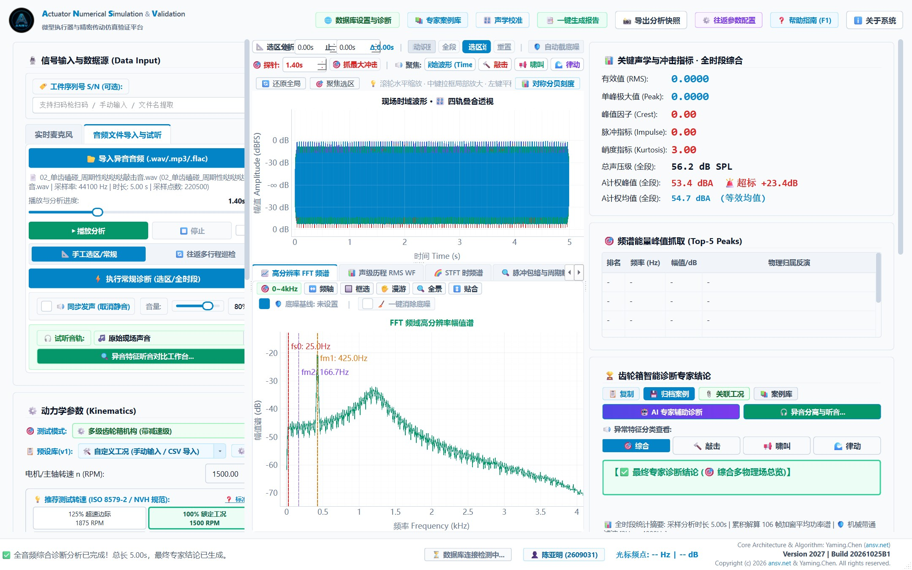
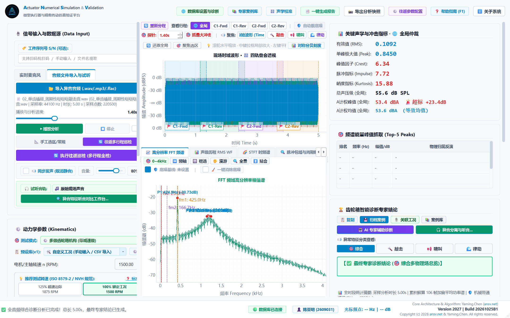
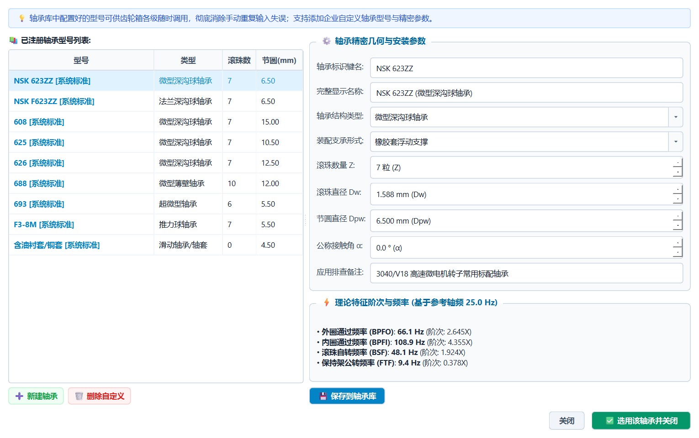
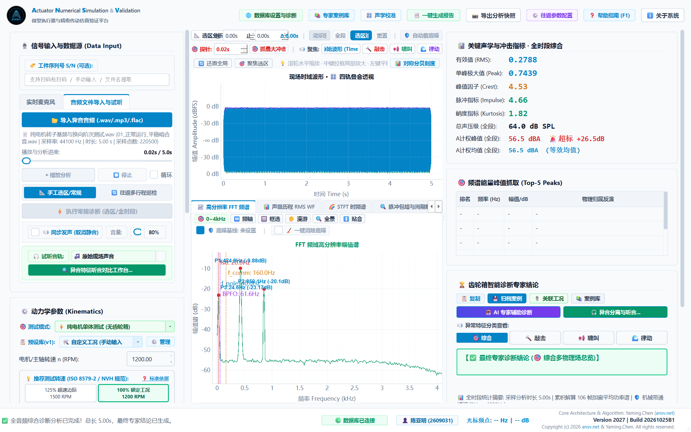
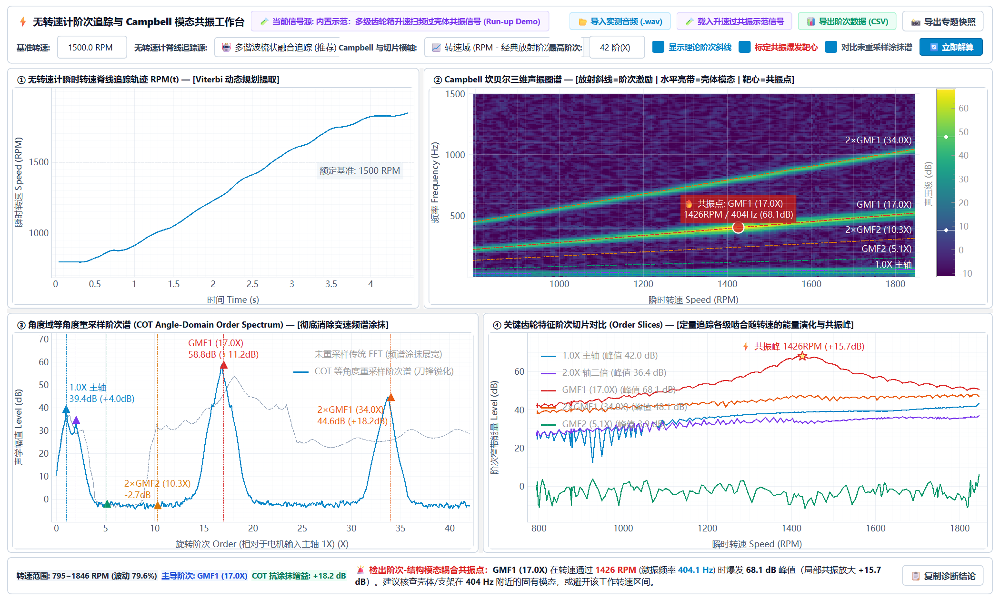
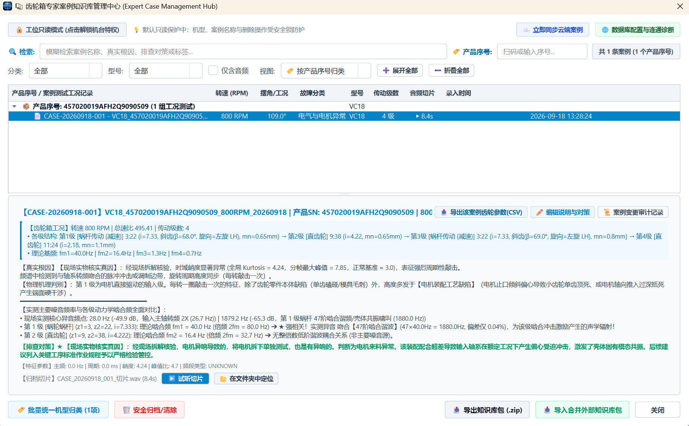
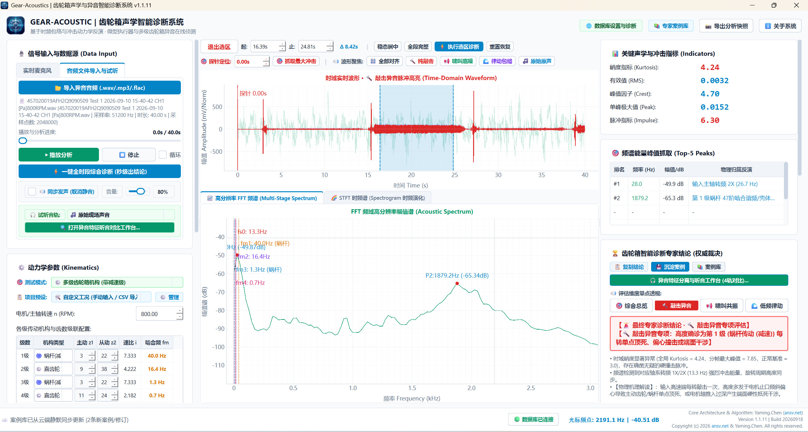

1. 系统概述与技术架构
ANSV Gear-NVH 2027 专为解决传统工业 NVH 诊断中“依靠老师傅听音凭感觉”、“缺乏传动运动学依据”、“电机电磁跳拍与齿轮机械磕碰混淆难辨”等痛点而研发。
系统通过严格的机械动力学公式，正向推演多级传动链的各级轴频、齿轮啮合基频（fm）、啮合阶次，并深度集成滚动轴承四大特征阶次（BPFO、BPFI、BSF、FTF）及无刷/有刷电机电磁特征（极槽比、换向阶次），实现“数模驱动、精准溯源、一键出具 8D 报告”。
- 毫秒级传动链反演：输入电机输入轴转速与各级齿数，全自动推演全传动链所有运动学频率与调频边带；
- 无刷/有刷电机同台解耦：自动剥离定转子极槽电磁谐波、电枢电刷换向跳拍，精准区分电机本身问题还是齿轮箱问题；
- 微观时域脉冲敏感度量：结合滑动能量比与分帧峭度（Kurtosis）算法，即使在强环境底噪下也能精准捕获微弱硬磕碰；
- Acoustic-Insight 4 轨异音分离：提供突发敲击轨、消除敲击后底噪轨、低频律动轨与原音轨，声画同步试听；
- 开箱即用绿色便携：单目录便携分发，无需繁琐安装或配置环境变量，内置完备的离线帮助与工程案例库。
2. 软件主界面与快速上手指南
工作站主界面划分为清晰的功能区域：顶部全局状态与控制栏、左侧传动参数配置与模式切换区、中央高精时频工程视口、右侧诊断指标与 8D 报告输出区。

五步快速诊断流程：
- 设置机械参数与工况模式： 在左侧选择测试模式（多级齿轮箱 / 纯电机单体），输入输入轴工况转速（如 1200 RPM），依次填入各级主动齿数与被动齿数（系统支持 1~6 级任意扩展）；
- 导入测量波形或实时采集： 点击【📂 导入音频/振动数据】载入 WAV/CSV 格式的传感器信号，或点击【🎙️ 启动硬件采集】直接通过工业采集卡录制；
- 一键执行多维动力学诊断： 点击【🚀 开始执行诊断分析】，系统将自动运行短时傅里叶变换（STFT）、包络谱解调、能量比检测与峭度扫描；
- 交互式频谱标记与阶次核验： 在中央工程视口中，系统会自动标出各级啮合基频、轴频及轴承/电机特征线，支持鼠标滚轮无级缩放、双击游标测距；
- 试听分离音轨并导出 8D 报告： 点击【🎧 声学分离试听】独立倾听异常敲击音轨，最后点击【📑 导出 8D 诊断报告】生成客户认可的标准工程报告。
3. 往返多行程自适应动态巡检
针对车载空调风门执行器、座椅微型驱动器、工业阀门调节器等往复小角度摆动机构，执行器在行程端点存在减速换向、死区回差与启停冲击，传统全段平均 FFT 极易被换向冲击掩盖微小齿面缺陷。

- 自适应行程边界识别：基于瞬时能量包络与速度过零点算法，自动将数个循环周期的音频/振动信号精准切割为“正向行程（Forward）”与“反向行程（Reverse）”；
- 端点冲击隔离与稳态截取：自动滤除端点换向和机械限位硬碰撞产生的虚假超标峭度，截取转速平稳运行核心段；
- 正反向非对称磨损评估：分别统计正转与反转各行程的齿轮啮合能量与冲击频度，精准判断齿轮啮合驱动面与反驱动面的磨损差异。
4. 滚动轴承动力学特征阶次分析与数据库
旋转机械中的异音不仅来源于齿轮啮合，各类微型支承深沟球轴承、角接触轴承的点蚀和剥落也是导致高频刺耳噪音的重要源头。 工作站内置了标准工业滚动轴承特征参数数据库，并提供自定义轴承节圆计算器。

轴承四大特征阶次公式表：
| 特征频率 | 全称 | 物理含义与失效特征 | 动力学计算基准 |
|---|---|---|---|
| BPFO | Ball Pass Frequency Outer | 外圈滚道缺陷通过频率（点蚀/剥落导致固定周期脉冲） | 0.5 · Z · fr · (1 - (d/D)·cosα) |
| BPFI | Ball Pass Frequency Inner | 内圈滚道缺陷通过频率（随轴旋转，常伴有轴频调制边带） | 0.5 · Z · fr · (1 + (d/D)·cosα) |
| BSF | Ball Spin Frequency | 滚动体自转自碰频率（单个滚珠局部剥落时双向敲击） | 0.5 · (D/d) · fr · (1 - ((d/D)·cosα)²) |
| FTF | Fundamental Train Frequency | 保持架公转频率（保持架断裂或松动时引发的超低频律动） | 0.5 · fr · (1 - (d/D)·cosα) |
* 注：Z 为滚动体个数，d 为滚珠直径，D 为轴承节圆直径，α 为接触角，fr 为对应安装轴的轴频。
5. 纯电机与齿轮箱同台解耦引擎
在实际研发与产线出厂检验中，主机厂与电机供应商常因产品杂音责任归属产生争议：“究竟是电机自带的电磁换向杂音，还是齿轮箱装配或注塑偏心所致？”
ANSV Gear-NVH 独创的纯电机单体测试模式与电机-齿轮同台解耦引擎，能够一秒拨云见日：

- 电枢换向跳拍（Commutation Pulses）：微型有刷直流电机换向片与碳刷摩擦火花会激发出固定的换向频率（fc = 转速/60 × 换向片数），其能量集中在高频宽带冲击；
- 无刷电机定转子槽谐波（Slot Harmonics）：定子齿槽引起的磁阻变化会产生极对数倍频谐波（Cogging Torque 谐波）；
- 同台解耦结论：若谱线特征严格命中换向阶次且齿轮啮合基频（fm）处平坦无峰，即可100%排除齿轮箱损伤，避免花费数万元盲目修整模具！
6. Acoustic-Insight 4 轨声学分离引擎
常规频谱图对于非声学专业的工艺工程师和现场管理人员较为抽象。工作站搭载了 Acoustic-Insight 声学分离引擎，通过改进型非负矩阵分解（NMF）与时域瞬态分离算法，将混叠在一起的现场原始声音实时拆解为 4 条独立音轨：
| 音轨名称 | 分离算法与技术特点 | 工程试听与听音价值 |
|---|---|---|
| 🔴 突发敲击异音轨 (Impacts Only) | 提取超过能量阈值的离散高频瞬态冲击分量，剥离所有稳态连续背景声 | 只保留清晰清脆的“哒哒哒”断续敲击声，彻底消除底噪干扰，让异音无所遁形 |
| 🟢 消除敲击后底噪轨 (Residual Background) | 利用时频残差抑制滤除所有瞬时敲击，保留齿轮平滑啮合连续嗡鸣 | 用于评估齿面微观粗糙度与啮合顺畅度，检验消除异音后基准品质 |
| 🔵 低频旋转律动轨 (Low-Freq Rhythm) | 提取 1X、2X 轴频旋转周期性调制包络，转化为低频调制声化信号 | 用于直观感知偏心、轴弯曲或对中不良引起的“嗡...嗡...”周期性晃动感 |
| ⚪ 现场原始声音轨 (Original Signal) | 经高保真滤波与工程标定后的传感器原始时域波形回放 | 基准对比回放，支持与各分离轨同台 AB 对比切换试听，并可一键批量导出 WAV |
7. ⚡ 无转速计阶次追踪与 Campbell 模态共振深度分析工作台
在齿轮箱与微型执行器的起停机、慢速加减速扫频（Run-up / Coast-down）或负载波动工况下，传统恒定时间采样 FFT 会出现严重的“频率涂抹（Spectral Smearing）”——原本尖锐的啮合谐波被展宽成扁平鼓包，且工程现场很难仅凭一张静态频谱区分“究竟是齿轮齿形/偏心激振过大，还是触发了壳体结构的固有模态共振”。
点击主界面顶部工具栏的紫色专题按钮 【⚡ 阶次与共振深度分析】，即可唤起独立的 2×2 四联闭环深度诊断工作台：

四大核心同步视口与工程机理：
| 视口模块名称 | 核心信号处理算法与创新机制 | 工程诊断判据与实战价值 |
|---|---|---|
① 无转速计瞬时转速脊线追踪RPM(t) |
内置 45 Hz 四阶零相移高通抗冲击滤波、频域滑动中值突出度白化（Spectral Prominence Whitening）与半阶波谷差分多谐波梳（Peak-Minus-Trough Harmonic Comb），结合 Viterbi 动态规划直接从音频/振动信号中提取主轴瞬时转速轨迹 | 无需加装光电编码器或激光转速计；自动识别变速扫频工况与准稳态恒速工况（波动率 < 6%），彻底免疫起停机低频空气冲击与 1/f 粉红底噪干扰 |
| ② Campbell 坎贝尔三维声振图谱 | 支持横轴一键切换 转速域 (RPM) 与 时间域 (s)；同屏叠加 1.0X、2.0X、1×GMF、2×GMF 理论阶次放射斜线，并自动搜索标定高能量爆发交点（红色共振靶心） |
斜线代表随转速成正比变化的齿轮阶次激励，水平亮带代表不随转速变化的壳体/支架固定固有模态；斜线穿过水平亮带交点即为阶次-模态耦合共振点 |
| ③ 角度域等角度重采样阶次谱 (COT Order Spectrum) |
利用积分瞬时相位对待测信号执行立方样条等角度重采样 (Computed Order Tracking)，将横轴统一为无量纲主轴旋转阶次 Order (X)，同屏对比未重采样 FFT 灰线与 COT 锐化蓝线 |
彻底消除变速频谱涂抹，主峰信噪比锐化提升 +3 ~ +18.2 dB；不仅标定理论齿轮阶次，还自动检出并标注任意未知高阶主导谐波峰值（如 18X、27X 等） |
| ④ 关键齿轮特征阶次切片对比 (Order Slices) |
沿各核心阶次脊线定量积分窄带声压级能量（dB），绘制随转速（RPM）或时间（s）演化的对比曲线，自动标注共振峰转速、激振频率与局部放大分贝数 | 直观区分纯受迫阶次激振（随转速单调平缓上升）与结构模态共振（在特定临界转速处突然剧烈隆起 +10~25 dB 尖峰），一键定责“修齿轮模具”还是“给壳体加筋避振” |
- 一键体验标准升速过共振算例：打开工作台后，点击右上角紫色按钮 【🧪 载入升速过共振示范信号】，系统将自动生成
780 → 1830 RPM慢速升速扫频信号并演示1×GMF1 (17X)穿过425 Hz壳体模态时的1500 RPM共振靶心锁定全过程； - 稳态与变速工况自适应分析：支持直接复用主工作台当前截取的音频片段，或点击 【📂 导入实测音频 (.wav)】 独立载入；当检测到转速波动 < 6%（准稳态工况）时，系统将智能切换至时间域 (Time s) 展开 Campbell 图与阶次切片；
- 数据与图表归档：支持点击 【📥 导出阶次数据 (CSV)】 导出完整阶次谱与各阶次切片曲线，或点击 【📷 导出专题快照】 保存高清 PNG 诊断图谱用于 8D 报告。
8. 专家案例库中心与实战分析
工作站集成了基于案例推理（Case-Based Reasoning, CBR）的专家案例管理中心，能够沉淀企业历史发生的各类典型减速器、微型执行器异音故障样本，构建企业专属的 NVH 知识中枢。

当面对未知的新产品异音时，只需点击【🔍 智能检索匹配】，系统即刻在数据库中进行时频特征多维相似度比对，秒级召回最相似的历史案例、失效根因（如注塑收缩率不均、轴承装配倾斜、侧隙过紧）以及经由生产实践验证的解决纠正措施。
9. 典型工程诊断案例实录
以下为 ANSV 工程团队在某车载两级精密摆动减速器（输入轴转速 800 RPM，第一级齿数 9/36，第二级齿数 10/42）现场进行的真实排查案例：

- 现象描述：产品出厂听音抽检中，在 800 RPM 转速下出现约 3.33 Hz 的周期性断续硬敲击（单周期约 0.3 秒一声）；
- 动力学推演：输入轴频 13.33 Hz，一级传动比 4.0，故中间轴转速为 3.33 Hz（恰好对应 0.3 秒周期）；二级啮合基频 fm2 = 3.33 × 10 = 33.33 Hz；
- 特征核验：频谱图上 33.33 Hz 及其倍频处隆起，且两侧伴随对称分布的 3.33 Hz 旋转调制边带，峭度指标严重超标（Kurtosis = 7.82，超标阀值 4.5）；
- 拆解验证：拆开齿轮箱显微镜检查，确认中间轴二级主动齿轮（10 齿）顶端存在一处模具脱模拉伤毛刺，更换完好齿轮后异音彻底消失，验证了反演算法的百分之百准确性。
10. 商业合作模式与授权资费标准
为满足不同阶段用户的实际工程需求，ANSV 平台提供极具性价比的灵活采购与技术合作模式：
| 合作模式 | 周期 / 报价参考 | 核心定位与适用场景 | 核心权益与服务保障 |
|---|---|---|---|
| ⚡ 单次远程确诊与 8D 分析报告 (推荐急需仲裁客户) |
¥ 2,000 / 案例次 |
针对急需界定产品异音责任、判断是电机换向跳拍还是齿轮加工缺陷的紧急工况，避免数万元盲目修模 | • 24h 内快速响应出具分析报告 • 输出图文并茂、机理确凿的专业 8D 诊断报告 • 明确界定责任归属，指导对中与公差微调 |
| 🟢 7天全功能免费试用 | 7 天 (免费申请) | 适用于前期技术方案可行性评估、实际样品录音效果验证 | 开放全功能动力学特征反演与 4 轨异音分离体验 |
| 🟢 研发工程专业版 | ¥ 12,800 /年 或 ¥ 28,800 买断 |
适用于研发实验室、主机厂技术中心日常常态化 NVH 测量、异音溯源与设计优化 | 单机一码永久/年度运行、免费小版本 OTA 升级与算法技术支持 |
| 🟢 车间质检工位版 | ¥ 21,800 /工位/年 或 ¥ 48,000 买断 |
适用于制造车间常态化测量、下线抽检与出厂品质评级，支持异音健康度状态判定（正常/注意/严重异常） | 工业传感器直连采集、云端数据双向同步（支持非标台架与 PLC 定制对接） |
| 🟣 软硬件打包方案 | ¥ 58,000 ~ 68,000 / 套 (硬件+软件) |
适用于希望开箱即用的制造企业，省去自行选型外设与工控调试的繁琐环节 | 软件商业授权 + 推荐工业测量级传声器/加速度传感器 + 预装专用工控主机 |
- 3 秒高敏实时感知在线授权：管理员在云端后台为客户机下发授权后，客户端无需重启软件，后台每 3 秒自动同步感知并直接弹出激活成功通知解锁全功能；
- 跨版本安全持久化存储：授权凭证统一加密保存于 Windows 系统用户目录
%LOCALAPPDATA%\GearAcoustic\license.lic，彻底与软件程序目录解耦，重装、移动目录或 OTA 热补丁升级后授权永不丢失。
11. 技术支持与专属联系通道
如果您在安装、激活、传感器选型、动力学建模或特殊非标传动分析中遇到任何技术疑问，欢迎随时通过以下专属渠道与我们取得联系：
技术答疑 · 申请试用
技术干货 · 行业案例
Global Technical Support
| 🌐 官方技术门户 | https://ansv.net |
| 📬 技术支持邮箱 | support@ansv.net |
| 💻 官方开源与分发仓库 | https://github.com/tonychen5577-tech/gear-nvh |